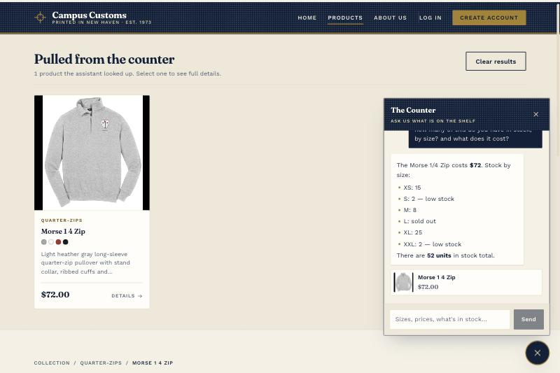

Chat reports real inventory and pricePass
On the Morse ¼ Zip product page, the assistant was asked: “how many of this do you have in stock, by size? and what does it cost?”

| Field | Database | Assistant said | Match |
|---|---|---|---|
| Price | 72.0 | $72 | yes |
| XS | 15 | 15 | yes |
| S | 2 | 2 — low stock | yes |
| M | 8 | 8 | yes |
| L | 0 | sold out | yes |
| XL | 25 | 25 | yes |
| XXL | 2 | 2 — low stock | yes |
| Total units | 52 | 52 units | yes |
The question said “this” rather than naming the product. The assistant resolved it from the page the shopper was on, which is the page-context mechanism from Problem 8.
A category question puts product cards on the pagePass
Asked “what hoodies do you have?” from the About page — deliberately not the catalogue — to show the results appear wherever the shopper is.

| Response field | Value | Used for |
|---|---|---|
matched_for | "hoodies" | The heading, “Pulled for ‘hoodies’” |
products[] | 8 cards | The grid on the page |
product_id | basic-hoodie-big-yale | Link to /products/<id> |
reply | “We have 27 hoodies…” | The chat message |
The cards carry only products the agent actually retrieved through a tool call, so the page cannot display an item the agent merely mentioned.
Usability feature: sorting and price filteringPass
One of the Problem 9 improvements. The catalogue previously had no way to order results or filter by price. Shown here with Under $40 and Price: low to high applied.

?sort=price_asc&max_price=40), so a filtered view can be
shared or bookmarked and survives a refresh.
| Control | Setting | Result |
|---|---|---|
| Price band | Under $40 | 25 of 102 products, all $32 |
| Sort | Price: low to high | Cheapest tier first |
| URL state | ?sort=price_asc&max_price=40 | Shareable, survives refresh |
| Invalid sort value | ?sort=bogus | 422, not a silent fallback |